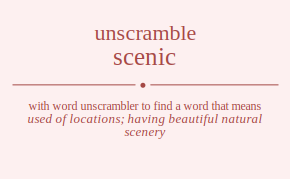

The word found after unscrambling scenic means that used of locations; having beautiful natural scenery, of or relating to the stage or stage scenery, .

The word found after unscrambling scenic means that used of locations; having beautiful natural scenery, of or relating to the stage or stage scenery, .
You can also find solutions for different combinations of letters in scenic like scenic scenci sceinc sceicn scecni scecin scneic scneci scniec scnice scncei scncie scienc sciecn scinec scince scicen scicne scceni sccein sccnei sccnie sccien sccine secnic secnci secinc secicn seccni seccin sencic sencci senicc senicc sencci sencic seicnc seiccn seincc seincc seiccn seicnc seccni seccin secnci secnic secicn secinc snceic snceci snciec sncice snccei snccie snecic snecci sneicc sneicc snecci snecic snicec snicce sniecc sniecc snicce snicec snccei snccie snceci snceic sncice snciec sicenc sicecn sicnec sicnce siccen siccne siecnc sieccn siencc siencc sieccn siecnc sincec sincce sinecc sinecc sincce sincec siccen siccne sicecn sicenc sicnce sicnec scceni sccein sccnei sccnie sccien sccine scecni scecin scenci scenic sceicn sceinc scncei scncie scneci scneic scnice scniec scicen scicne sciecn scienc scince scinec csenic csenci cseinc cseicn csecni csecin csneic csneci csniec csnice csncei csncie csienc csiecn csinec csince csicen csicne csceni cscein cscnei cscnie cscien cscine cesnic cesnci cesinc cesicn cescni cescin censic censci cenisc cenics cencsi cencis ceisnc ceiscn ceinsc ceincs ceicsn ceicns cecsni cecsin cecnsi cecnis cecisn cecins cnseic cnseci cnsiec cnsice cnscei cnscie cnesic cnesci cneisc cneics cnecsi cnecis cnisec cnisce cniesc cniecs cnicse cnices cncsei cncsie cncesi cnceis cncise cncies cisenc cisecn cisnec cisnce ciscen ciscne ciesnc ciescn ciensc ciencs ciecsn ciecns cinsec cinsce cinesc cinecs cincse cinces cicsen cicsne cicesn cicens cicnse cicnes ccseni ccsein ccsnei ccsnie ccsien ccsine ccesni ccesin ccensi ccenis cceisn cceins ccnsei ccnsie ccnesi ccneis ccnise ccnies ccisen ccisne cciesn cciens ccinse ccines escnic escnci escinc escicn esccni esccin esncic esncci esnicc esnicc esncci esncic esicnc esiccn esincc esincc esiccn esicnc esccni esccin escnci escnic escicn escinc ecsnic ecsnci ecsinc ecsicn ecscni ecscin ecnsic ecnsci ecnisc ecnics ecncsi ecncis ecisnc eciscn ecinsc ecincs ecicsn ecicns eccsni eccsin eccnsi eccnis eccisn eccins enscic enscci ensicc ensicc enscci enscic encsic encsci encisc encics enccsi enccis eniscc eniscc enicsc eniccs enicsc eniccs encsci encsic enccsi enccis encisc encics eiscnc eisccn eisncc eisncc eisccn eiscnc eicsnc eicscn eicnsc eicncs eiccsn eiccns einscc einscc eincsc einccs eincsc einccs eicscn eicsnc eiccsn eiccns eicnsc eicncs ecscni ecscin ecsnci ecsnic ecsicn ecsinc eccsni eccsin eccnsi eccnis eccisn eccins ecnsci ecnsic ecncsi ecncis ecnisc ecnics eciscn ecisnc ecicsn ecicns ecinsc ecincs nsceic nsceci nsciec nscice nsccei nsccie nsecic nsecci nseicc nseicc nsecci nsecic nsicec nsicce nsiecc nsiecc nsicce nsicec nsccei nsccie nsceci nsceic nscice nsciec ncseic ncseci ncsiec ncsice ncscei ncscie ncesic ncesci nceisc nceics ncecsi ncecis ncisec ncisce nciesc nciecs ncicse ncices nccsei nccsie nccesi ncceis nccise nccies nescic nescci nesicc nesicc nescci nescic necsic necsci necisc necics neccsi neccis neiscc neiscc neicsc neiccs neicsc neiccs necsci necsic neccsi neccis necisc necics niscec niscce nisecc nisecc niscce niscec nicsec nicsce nicesc nicecs niccse nicces niescc niescc niecsc nieccs niecsc nieccs nicsce nicsec niccse nicces nicesc nicecs ncscei ncscie ncseci ncseic ncsice ncsiec nccsei nccsie nccesi ncceis nccise nccies ncesci ncesic ncecsi ncecis nceisc nceics ncisce ncisec ncicse ncices nciesc nciecs iscenc iscecn iscnec iscnce isccen isccne isecnc iseccn isencc isencc iseccn isecnc isncec isncce isnecc isnecc isncce isncec isccen isccne iscecn iscenc iscnce iscnec icsenc icsecn icsnec icsnce icscen icscne icesnc icescn icensc icencs icecsn icecns icnsec icnsce icnesc icnecs icncse icnces iccsen iccsne iccesn iccens iccnse iccnes iescnc iesccn iesncc iesncc iesccn iescnc iecsnc iecscn iecnsc iecncs ieccsn ieccns ienscc ienscc iencsc ienccs iencsc ienccs iecscn iecsnc ieccsn ieccns iecnsc iecncs inscec inscce insecc insecc inscce inscec incsec incsce incesc incecs inccse incces inescc inescc inecsc ineccs inecsc ineccs incsce incsec inccse incces incesc incecs icscen icscne icsecn icsenc icsnce icsnec iccsen iccsne iccesn iccens iccnse iccnes icescn icesnc icecsn icecns icensc icencs icnsce icnsec icncse icnces icnesc icnecs csceni cscein cscnei cscnie cscien cscine csecni csecin csenci csenic cseicn cseinc csncei csncie csneci csneic csnice csniec csicen csicne csiecn csienc csince csinec ccseni ccsein ccsnei ccsnie ccsien ccsine ccesni ccesin ccensi ccenis cceisn cceins ccnsei ccnsie ccnesi ccneis ccnise ccnies ccisen ccisne cciesn cciens ccinse ccines cescni cescin cesnci cesnic cesicn cesinc cecsni cecsin cecnsi cecnis cecisn cecins censci censic cencsi cencis cenisc cenics ceiscn ceisnc ceicsn ceicns ceinsc ceincs cnscei cnscie cnseci cnseic cnsice cnsiec cncsei cncsie cncesi cnceis cncise cncies cnesci cnesic cnecsi cnecis cneisc cneics cnisce cnisec cnicse cnices cniesc cniecs ciscen ciscne cisecn cisenc cisnce cisnec cicsen cicsne cicesn cicens cicnse cicnes ciescn ciesnc ciecsn ciecns ciensc ciencs cinsce cinsec cincse cinces cinesc cinecs.
Unscramble Words is registered trademark.